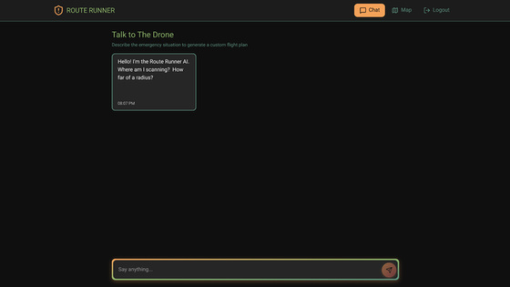
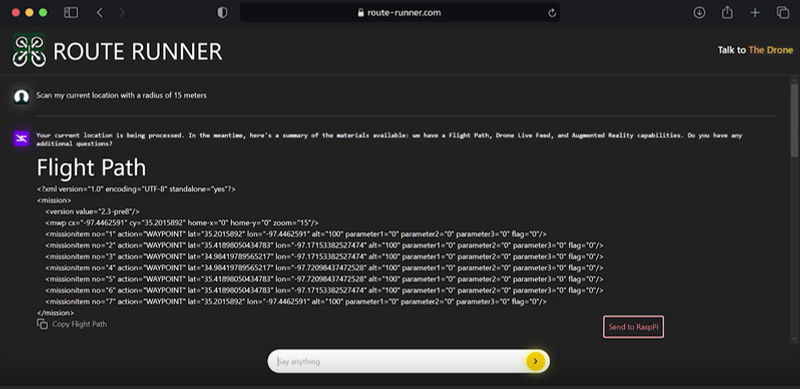
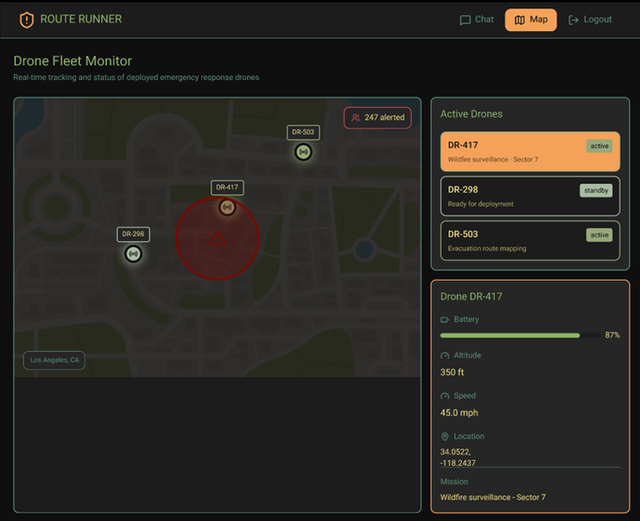

Built and integrated the UAV hardware platform for Route Runner, a hackathon project designed to help first responders scan hazardous areas, collect aerial data, and support faster situational awareness through prompt-based mission planning.
Overview
Route Runner connected a prompt-driven mission-planning workflow with a custom drone platform. The system was designed to generate flight paths, support autonomous scanning, collect live video, and organize post-flight data for emergency response use cases.
Problem
First responders often need fast information from areas that may be unsafe to enter directly. The project needed a UAV platform that could be built quickly, support autonomous flight development, carry onboard computation, and provide reliable data for the software team during a short hackathon timeline.
Approach
- Defined the hardware requirements around autonomous flight, mission planning, onboard compute, and rapid field testing.
- Selected compatible motors, propellers, electronics, and frame components that could be assembled and tested within the hackathon timeline.
- Integrated the SpeedyBee F405 V3 flight stack with a Raspberry Pi to support onboard communication and computation.
- Collected and organized flight-test data to help the software team refine mission-planning and post-flight analysis workflows.
Contribution
- Led the hardware effort by researching components, selecting motors and propellers, and integrating the custom quadcopter platform.
- Built the drone around an F450 frame, SpeedyBee F405 V3 50A stack, and Raspberry Pi for onboard computation and communication.
- Supported autonomous flight testing by collecting flight data, checking hardware behavior, and helping connect the physical drone to the mission-planning system.



Outcome
- Built a working autonomous drone platform during a 24-hour hackathon for hazard-area scanning and emergency-response support.
- Integrated flight hardware, onboard compute, and mission-planning support into a single custom UAV workflow.
- Provided flight-test data and hardware feedback that helped the software team connect route generation, data capture, and post-flight review.
- Created a flexible UAV testbed that could support future work in autonomous routing, video capture, and area analysis.
What I Learned
- Hardware decisions have to support the software workflow, especially when autonomy and onboard compute are part of the system.
- Fast prototyping works best when component compatibility, wiring, and test procedures are checked early.
- Flight-test data is useful only when it is organized clearly enough for the software and mission-planning teams to act on it.